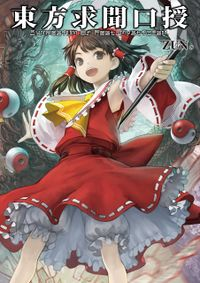

- Welcome to Touhou Wiki!
- Please register to edit. For assistance, check in with our Discord server or IRC channel.
Symposium of Post-mysticism
Symposium of Post-mysticism | |
|---|---|
|
 | |
| Developer | |
| Publisher | |
| Released |
2012-04-27 |
| Genre |
Official Book |
| Writers | |
| Illustrators |
Masakichi (匡吉) |
| Pages |
184 |
| ISBN | |
Touhou
Information[edit]
Character profiles are interspersed among the so-called "symposium" - essentially a dialogue hosted by Marisa Kirisame featuring Kanako Yasaka, Byakuren Hijiri, and Toyosatomimi no Miko. These longer interviews involve the three discussing various topics while Hieda no Akyuu records their discussions.
Various articles from the Bunbunmaru Newspaper and the Kakashi Spirit News are also included at the end of the book, and deal with characters that weren't given an official profile, as well as certain events and various character interactions.
Press[edit]
The announcement that ZUN would be releasing a new print work sometime in Winter 2011/2012 was first made by Okonogi in Nikenme Radio's sixteenth episode. ZUN personally did not say anything about it during the interview.[1]
The first available news regarding Symposium of Post-mysticism was from Touhou Project Doujin Tsuhan Jouhou website.[2] From what they announced, the release date for the book was set to be January 26, 2012. In addition, Amazon.jp also listed the product up to the store for pre-order.
In mid-January, Ichijinsha's website for the book stated that due to "various circumstances", the release of the book would be sometime in March. It was updated on January 25 on Amazon's website, which gave it a March 31 release date.[3] On March 6, the book's release was delayed once again, this time to April 25.[4] Ichijinsha's official website then updated the release date to April 27, two days later, on April 10.[5]
Japanese doujinshi store Tora no Ana offered a Reimu folder as a preorder bonus.
Contents[edit]
- pg. 3: Aphorism
- pg. 4: Table of Contents
- pg. 5: Let's discuss Gensokyo's future
- pg. 6-17: Part 1: What change will the new powers bring to Gensokyo?
- pg. 18-21: Kanako Yasaka
- pg. 22-25: Suwako Moriya
- pg. 26-29: Byakuren Hijiri
- pg. 30-33: Toyosatomimi no Miko
- pg. 34-36: Sanae Kochiya
- pg. 38-48: Part 2: The current status of the world outside Gensokyo
- pg. 50-52: Mamizou Futatsuiwa
- pg. 53-55: Nue Houjuu
- pg. 56-58: Mononobe no Futo
- pg. 59-61: Soga no Tojiko
- pg. 62-72: Part 3: On the past and present of youkai, and truly new youkai
- pg. 73-75: Nitori Kawashiro
- pg. 76-78: Kogasa Tatara
- pg. 79-81: Minamitsu Murasa
- pg. 82-84: Kyouko Kasodani
- pg. 85-87: Ichirin Kumoi & Unzan
- pg. 88-90: Yamame Kurodani
- pg. 91-93: Rin Kaenbyou
- pg. 94-106: Part 4: The Present and Future of the Hated
- pg. 107-109: Parsee Mizuhashi
- pg. 110-113: Satori Komeiji
- pg. 114-116: Koishi Komeiji
- pg. 117-119: Utsuho Reiuji
- pg. 120-122: Yuugi Hoshiguma
- pg. 124-135: Part 5: Are Religion and Faith Necessary to Gensokyo?
- pg. 136-138: Shou Toramaru
- pg. 139-141: Nazrin
- pg. 142-143: Shizuha Aki
- pg. 144: Minoriko Aki
- pg. 145-147: Hina Kagiyama
- pg. 148-150: Seiga Kaku
- pg. 151-152: Yoshika Miyako
- pg. 154-166: Part 6: Youkai Extermination: What's the Right Thing to Do?
- pg. 156: Bunbunmaru Newspaper — "A New Trend in Youkai Music" — Mystia and Kyouko's article
- pg. 157: Bunbunmaru Newspaper — "A Step in Translating with the Mysterious Zombie" — Rin and Yoshika's article
- pg. 158: Kakashi Spirit News — "Aliens from a Brightly Burning Fire Ball?" — Nue's article
- pg. 159: Bunbunmaru Newspaper — "Skeletal Remains Found from the Dead Well" — Kisume's article
- pg. 160: Bunbunmaru Newspaper — "A New Business in the Busy Time at the End of The Year" — Seiga's article
- pg. 161: Kakashi Spirit News — "Instant Hina Dolls Popular" — Hina's article
- pg. 162: Bunbunmaru Newspaper — "What Is the Future of the Worn Out Tool?" — Kogasa's article
- pg. 168-169: Afterword by Hieda no Akyuu
- pg. 170-179: Newspaper Articles
- pg. 170: Bunbunmaru Newspaper — "Opinions Divided on Mountain's Future Direction" — Kanako's article
- pg. 171: Bunbunmaru Newspaper — "The Buddhist Service for the Youkai at the Night of Summer" — Byakuren's article
- pg. 172: Bunbunmaru Newspaper — "A Savior for the Falsely Accused Victims?" — Miko's article
- pg. 173: Bunbunmaru Newspaper — "Incident on the Youkai Mountain?" — Suwako's article
- pg. 174: Bunbunmaru Newspaper — "A Super Accurate Extreme Local Weather Forecast!" — Tenshi's article
- pg. 175: Kakashi Spirit News — "The Legend of the Veil Marriage Act" — Iku's article
- pg. 176: Bunbunmaru Newspaper — "New Shogi Discovery?" — Momiji's article
- pg. 177: Bunbunmaru Newspaper — "The Hakurei Shrine Collapses" — Reimu's article
- pg. 178: Kakashi Spirit News — "A Secretly Broken Up Great War" — Marisa and Cirno's article
- pg. 179: Bunbunmaru Newspaper — "What Would the Propriety of Mist Nets Be?" — Kasen's article
- pg. 180-181: Afterword by ZUN
- pg. 182-183: Interview with ZUN
- pg. 184: Copyright page
Danger/Friendship Level Summary[edit]
| Danger Level | ||||||||
|---|---|---|---|---|---|---|---|---|
| H u m a n F r i e n d s h i p L e v e l |
Low | Medium | High | Very High | Unknown | |||
| Very High |
Kyouko Kasodani Toyosatomimi no Miko |
Minoriko Aki | Mamizou Futatsuiwa Seiga Kaku |
|||||
| High | Kogasa Tatara Sanae Kochiya Kanako Yasaka Rin Kaenbyou Shizuha Aki |
Ichirin Kumoi Unzan |
||||||
| Medium | Suwako Moriya Shou Toramaru |
Nitori Kawashiro | Hina Kagiyama | Byakuren Hijiri | ||||
| Low | Nazrin | Nue Houjuu | Soga no Tojiko Minamitsu Murasa |
|||||
| Very Low | Yamame Kurodani | |||||||
| None | Parsee Mizuhashi | Satori Komeiji Yoshika Miyako |
Koishi Komeiji | |||||
| Unknown | Mononobe no Futo | Yuugi Hoshiguma | Utsuho Reiuji | |||||
Full Cover
References[edit]
- ↑ 不楼軒 ～ tsuem's diary (28 November 2011). "第16回 ２軒目から始まるラジオ メモ程度" (in 日本語). Retrieved 9 December 2011.
- ↑ 東方project同人通販情報 (7 December 2011). "東方求聞口授 東方project同人通販情報" (in 日本語). Retrieved 8 December 2011.
- ↑ "Amazon.co.jp： 東方求聞口授 ~ Symposium of Post-mysticism.（仮）: ZUN: 本:" (in 日本語). Retrieved 25 January 2012.
- ↑ "Amazon.co.jp： 東方求聞口授 ~ Symposium of Post-mysticism.（仮）: ZUN: 本:" (in 日本語). Retrieved 06 March 2012. Check date values in:
|accessdate=(help) - ↑ "一迅社WEB 既刊検索:" (in 日本語). Retrieved 12 April 2012.